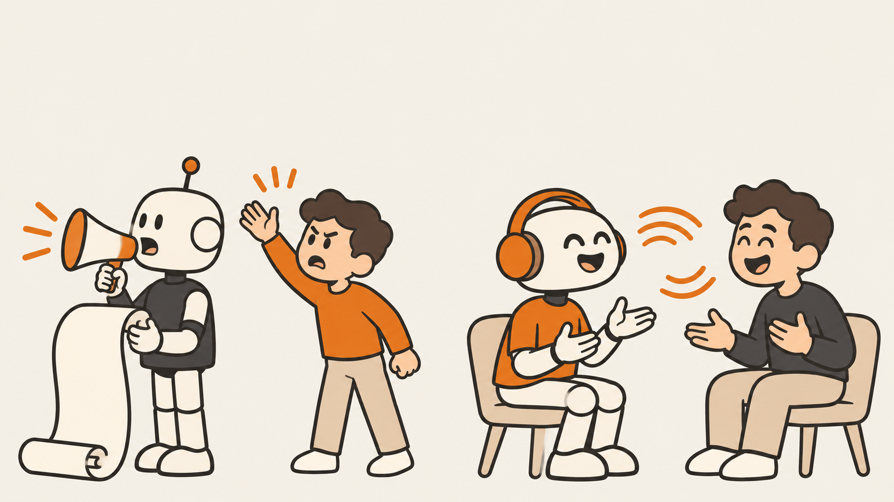
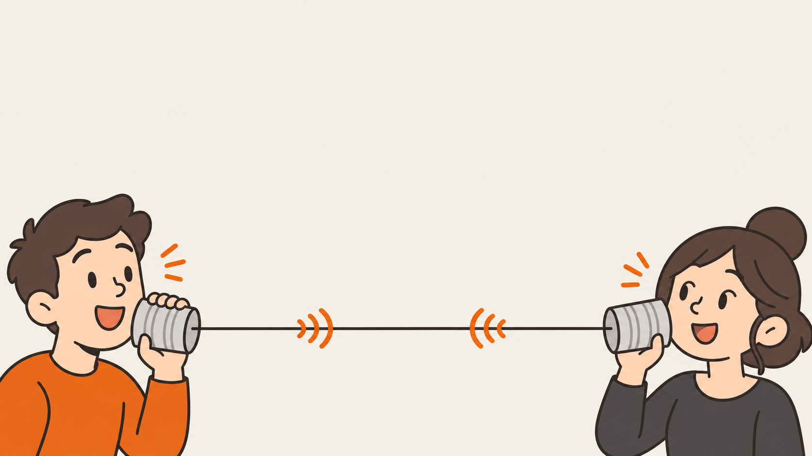

Today
Build your own
 Gemini Live
Gemini Live📁Your memory
+
💻Your computer
=
Jarvis
Gemini Live, plugged into you.
Talk · Voice AI agents
Build Voice AI Agents with Gemini Live API
Eric Techyoutube.com/@EricWTech · skool.com/erictech
The plan
Three levels
1Voice
2Inside Gemini Live
Inside Gemini Live3Code
Level 1 · Two ways to talk to AI
Most AI voice reads. Gemini Live hears.

Classic · one way
Speech→text
Text→speech
Live · both ways
Gemini Live
Gemini LiveIt hears tone, pauses, energy.
Level 2 · Inside Gemini Live
Three pieces, one open line

 Browser
BrowserYour server
Gemini LiveBrain, memory, hands
Memory
_context/
projects/
notes/
skills/
Brain · Gemini LiveHands
Recap
Brain, memory, hands
1BrainGemini Live
BrainGemini Live2MemorySecond brain
3🖐️HandsTools
The repo · open source
Scan to get Jarvis
 github.com/EricTechPro/jarvis
github.com/EricTechPro/jarvisDevFest Vancouver · for attendees
Free Google Cloud credits
 Google Cloud
Google Cloud$Credits
Fri 27 Nov · 10 AM PTDevFest Vancouver 2026
g.dev/credits/devfest-vancouver-2026
- 1Scan the QR
- 2Sign in with Gmail
- 3Claim the badge
- 4Create a project